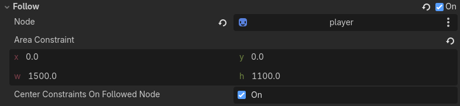

Using PowderSimulation
When working with this plugin, most of the work will be done by interacting with one node: PowderSimulation. With this node, you can do many things, such as edit the cells in the simulation, dynamically add/remove chunks, and more.
Sections
- Inspector Properties
- Coordinate Systems
- Editing Cells
- Chunk Addition/Removal
- Making the Simulation Dynamically Follow any Node2D
Coordinate Systems
There are 3 coordinate systems relevent to this plugin:
- World,
- Local,
- and Chunk.
The World Coordinate system is the regular coordinate system you're used to. It is used in regular Godot for the positioning of Node2Ds, Controls and such.
The Local Coordinate system is the coordinate system used inside the simulation of a PowderSimulation node for the positioning of cells.
Ex. (0, 2) in local coords would be 2 cells down from the center of the simulation.
You can use the built-in functions
WorldToLocal(),LocalToWorld()andLocalToChunk()in the PowderSimulation node to convert between their respective coordinate systems.
The Chunk Coordinate system is the coordinate system used in the simulation of a PowderSimulation node for the positioning of chunks.
Ex. (1, 3) in chunk coords would be 1 chunk to the right and 3 chunks down from the center chunk.
You can use the built-in functions
WorldToChunk()andLocalToChunk()in the PowderSimulation node to convert between their respective coordinate systems. When converting, it rounds the resulting values to the nearest chunk.
Editing Cells
The PowderSimulation node contains functions that let you directly add elements to the simulation as the game is running. Uses of this feature include procedural generation or letting the player place elements.
These are the functions that allow you to edit and get cells:
Note: when using
PlaceElement()andPlaceGroupElements(), you can use the functions mentioned in the Coordinate Systems section if you need to convert world coordinates to local coordinates.
As an example of how they can be used, this is how the placing in the Test_Playground scene works:
public override void _Process(double delta)
{
Vector2I MousePos = (Vector2I)GetGlobalMousePosition();
// spawn elements using keys
if(KeysPressed.Count > 0)
{
Sim.PlaceGroupElements(brushSize, Sim.WorldToLocal(MousePos), ElementKeys[KeysPressed[0]], ElementKeys[KeysPressed[0]] == AllElements.AIR);
}
}
ElementKeys[KeysPressed[0]] in this case is just the element it is trying to place.
This uses the position of the mouse, converted to local coordinates to find where to place the elements. It also only overrides other elements if the element being placed is AIR, so it functions as an eraser.
Chunk Addition/Removal
When FollowMode is false, you can freely add or remove chunks from a simulation at any given time. Uses of this include things like expanding/shrinking the simulation, or making it follow a camera/player for optimization purposes (the latter can be done with a built-in feature, as outlined in the section Making the Simulation Dynamically Follow any Node2D).
Adding/removing chunks can be accomplished with these functions in the PowderSimulation class:
These functions take a position in Chunk coordinates (see Coordinate Systems) and either add a chunk if it does not exist, or remove a chunk if it does exist respectively.
Making the Simulation Dynamically Follow any Node2D
This section goes over the properties in the Follow dropdown in the Inspector.
Setting a PowderSimulation to follow a Node2D will dynamically add/remove chunks in the simulation to fill a rectangle with a given size that wraps around a given node.
This sacrifices your ability to manually add/remove chunks, but is useful for things like an expansive world that cannot all be loaded at the same time for performance reasons.

The
Followsection in the PowderSimulation Inspector. Notice how thePositionof the AreaConstraint isn't used, as it will be overridden anyway.
These are the properties that can be changed in the Inspector when FollowMode is true:
-
Node: This is the Node2D that the simulation will be constrained around.
In this example, it is set to
Player, which is a node that is controlled by the player. With this setup, the simulation will always be centered around thisPlayernode. -
Area Constraint: The size of this Rect2 is used to determine the size the simulation is constrained to.
The
Positionof this value is always overridden, so there is no point in setting it to anything. -
Center Constraints on Followed Node: If this is
false, then the position of the Rect2 will be equal to the position of the followed node. Otherwise it will be equal toRect2.size / 2 + Node.position.
These values can also be changed at runtime via code. The functions SetFollowMode(), SetFollowNode(), and SetConstraints() can be used to change their own respective values.